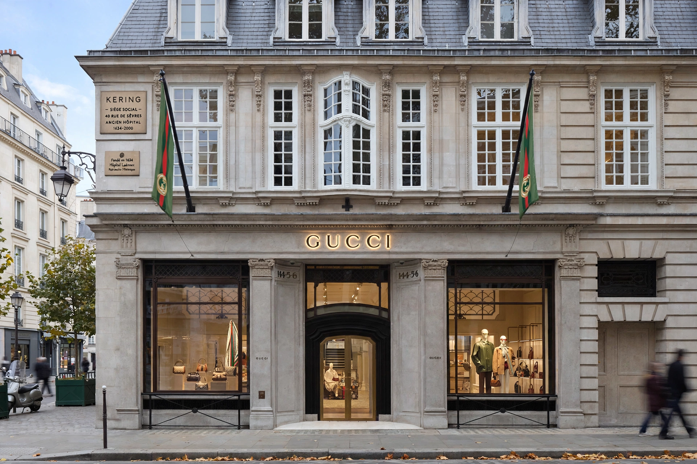

From Wikipedia, the free encyclopedia
| Kering SA | |
|---|---|
 | |
| Founded | 1962 (as Pinault timber business); luxury group from 1999 |
| Founder | François Pinault |
| Headquarters | 40 rue de Sèvres, Paris, France |
| Brands | Gucci, Saint Laurent, Balenciaga, Bottega Veneta, Alexander McQueen, Brioni, Boucheron |
Kering (French: [keʁiŋ]) is a French multinational luxury group headquartered in Paris. It owns Gucci, Saint Laurent, Balenciaga, Bottega Veneta, Alexander McQueen and other luxury brands in fashion, leather goods, jewellery and eyewear, and is the principal rival of LVMH (Louis Vuitton) and Richemont.
François Pinault founded a timber-trading business in Brittany in 1962, which grew into the retail conglomerate Pinault-Printemps-Redoute (PPR), owner of Printemps department stores and Fnac. In 1999 PPR bought a controlling stake in Gucci Group — defeating LVMH in a famous takeover battle — and pivoted to luxury, progressively selling its retail assets. The group renamed itself Kering in 2013; "ker" means "home" in Breton. François-Henri Pinault, the founder's son, has chaired the group since 2005.
Gucci, long the group's profit engine, saw sales decline in the mid-2020s amid a creative transition. Kering acquired a 30% stake in Valentino in 2023, built Kering Eyewear and Beauté divisions (acquiring fragrance house Creed in 2023), and in 2025 announced leadership changes including Luca de Meo as CEO. Its Paris headquarters occupy the historic Laennec hospital in the 7th arrondissement.